|
|
HELP FIND THE FOLLOWING LOCATIONS
PAGE 98
GIDEON’S WAY: The 'V' Men (Cyril Frankel: ???)
(Stephen Carter,
August 2007)
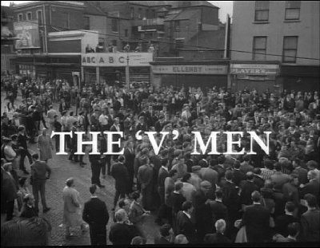
Unknown 1:
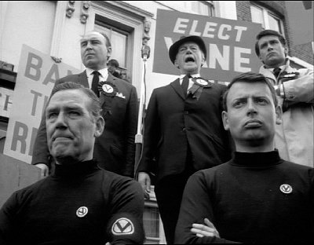 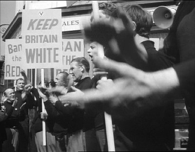 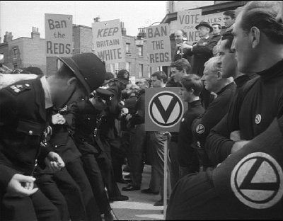 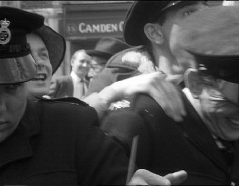
 Jas Wiseman, February 2006 - “I'm
sure they were filmed in
Jas Wiseman, February 2006 - “I'm
sure they were filmed in
 From 1965 Phone book - Camden
Office Equipment Store, 12a
From 1965 Phone book - Camden
Office Equipment Store, 12a
 Ellenby and Co.,
Ellenby and Co.,
 Wyn Roberts, October 2006 -I
strongly suspect that uk1 was filmed at the
Wyn Roberts, October 2006 -I
strongly suspect that uk1 was filmed at the
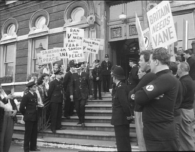 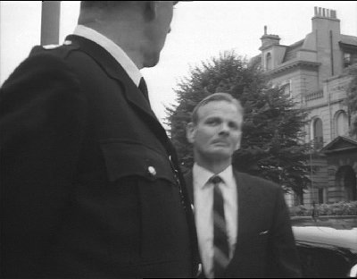 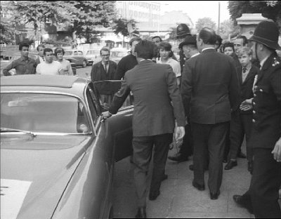
 Jas Wiseman, February 2006 -
“These 3 look like they were filmed at a 'town hall' style building - possible
north-west London but the building in the background of pic 7 (behind Allan Cuthbertson) look
more like west London.”
Jas Wiseman, February 2006 -
“These 3 look like they were filmed at a 'town hall' style building - possible
north-west London but the building in the background of pic 7 (behind Allan Cuthbertson) look
more like west London.”
 Wyn Roberts, October 2006 -
Wyn Roberts, October 2006 -
(Stephen Carter,
August 2007)
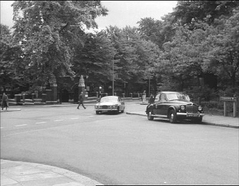 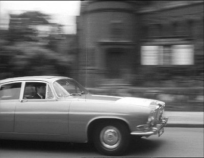 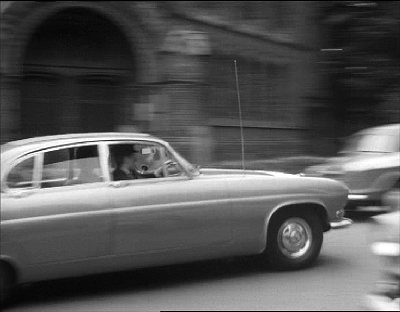
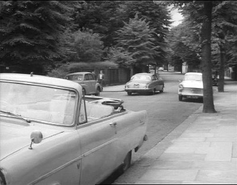
 Stephen Carter – “The car turns left from Rosslyn Hill into
Stephen Carter – “The car turns left from Rosslyn Hill into


Unknown 6:
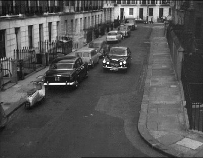
Think you know a spot? Need a bigger image? Email me.
< Previous | Index | Avengerland | Next >
Copyright © 2003 Anthony R. McKay